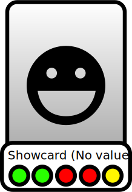
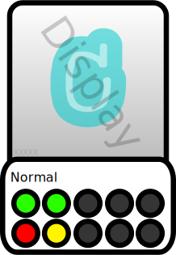
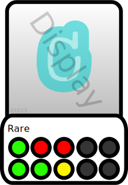
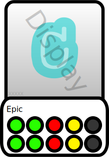
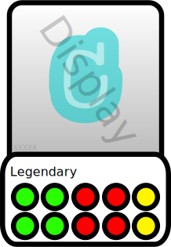

tohle je karta o které se mluví:
Životy karty jsou znázorněny zelenými kruhy
na této kartě jsou 2 zelené kruhy = 2 životy
Síla karty je znázorněna červenými kruhy
na této kartě jsou 2 červené kruhy = 2 body síly
Rychlost karty je znázorněna žlutými kruhy
na této kartě jsou 1 žluté kruhy = 2 body rychlosti
Karty nemají reálnou hodnotu a nestojí žádné peníze WK tým nemá kontrolu nad karetními tranzakcemi
Sloty na různých raritách:
